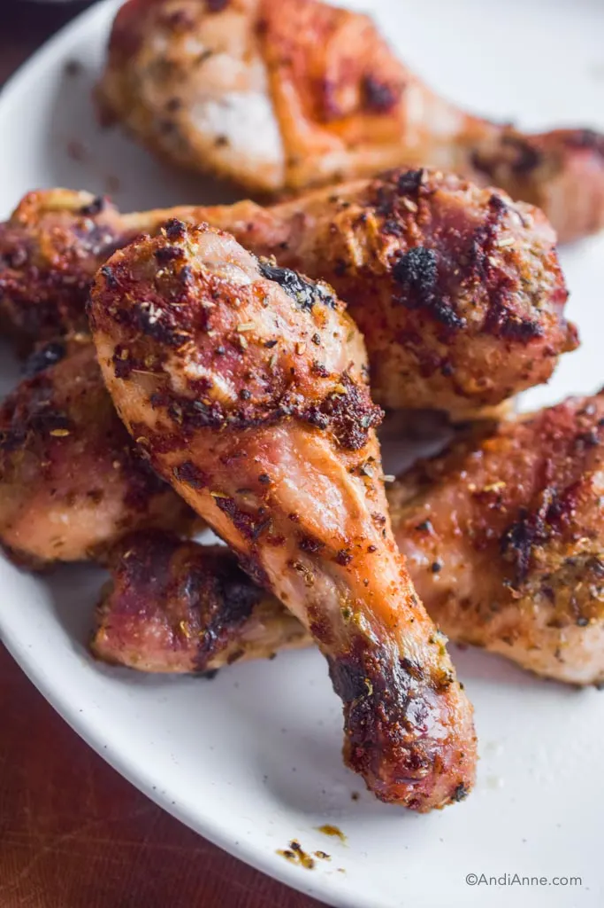

Baked peppered chicken

Easy baked peppered chicken
This chicken recipe is perfect for anyone that has a busy lifestyle, and wishes to meal prep for the week, or just simply trying to shed some pounds and is looking to up their protein intake in a no fuss way. Can't go wrong with simple.
Ingredients:
- Chicken drumsticks (or thighs)
- white pepper
- black pepper
- cayenne pepper (optional)
Steps:
- Allow 2 lbs of chicken to sit out and return to room temperature
- Preheat the oven to 200 degrees celcius.
- Combine salt, white pepper, black pepper, and cayenne pepper to create our dry rub
- Cover the chicken pieces with the dry rub thoroughly with your hands
- Set the chicken on a baking tray, topped with a wire mesh.
- Bake until the chicken fat has been fully rendered so the skin is extra thin.
Pairing tip: Serve with mashed potatoes, string beans, or any variety of white rice.